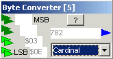

January 2003
JALss, Type Conversion
|
Byte Converter This device converts 1 to 4 bytes into an analog signal / value. Connections are made by named bytes, coming from any MCU device. In general MCU devices will show their internal registers and if the program language is known by JALss, also the program language variables will be available. When less then 4 bytes should be converted, start always at the Least Significant Byte. At the moment only integer and cardinal conversion are implemented, but if you've other suggestions, give me the specifications and I'll implement them. |
 |